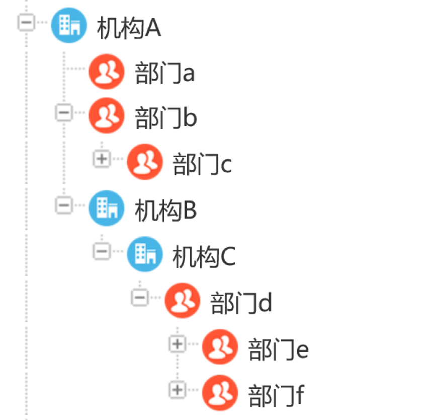

0表示显示所有组织架构，默认值为0；
1代表本机构；
2代表机构下的1级部门；以此类推 。
例如：1、配置员工只能查看本机构人员（没有机构则以最顶层部门为准），则配置参数为1
2、配置员工只能查看机构下1级部门以下的人员，则配置参数为2
举例：

若设置为仅显示第1层组织，则部门c的地址本，从机构A开始，但是不可查阅机构B下面的部分；部门e的地址本从机构C开始，不可查阅其他部门。
若是设置为第2层组织，则部门c的地址本，从部门b开始，不可查阅部门b以外的地址本；部门e的地址本从部门d开始，不可以查阅部门d以外的地址本。
注意：机构虽然在展示上是层级的，但计算的时候按平级计算。